REF: PROJ-GALLERY
Projects & Workshop Gallery
A selection of our machinery, fabrication and structural steel work.

TIG Weld Assembly

Bucket Elevator System

Structural Steel Framework

Workshop Fabrication

Design & Engineering Review

CNC Laser Cutting
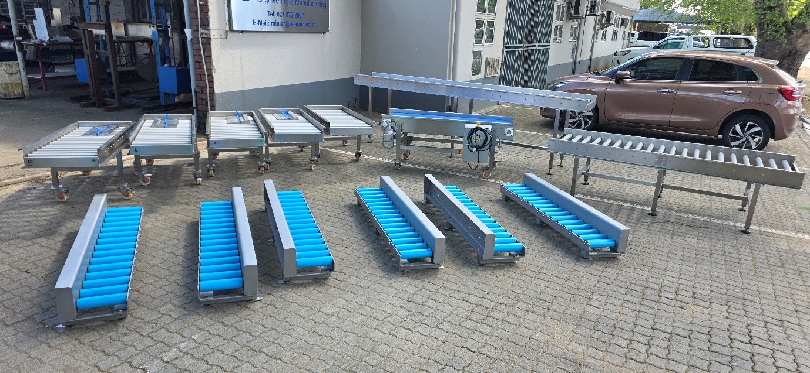
Assorted Gravity Roller Conveyors

Driven Roller Pallet Conveyor
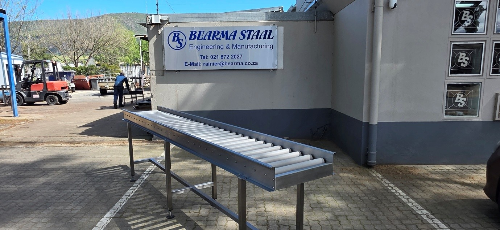
Gravity Roller Conveyor
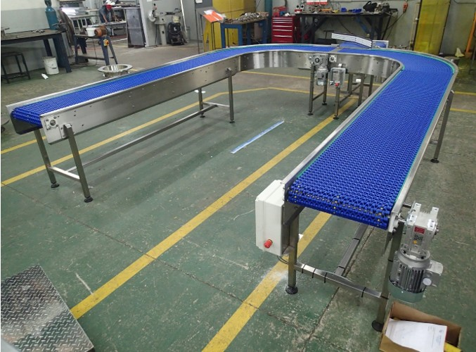
Radius-Belt Modular Chain Belt
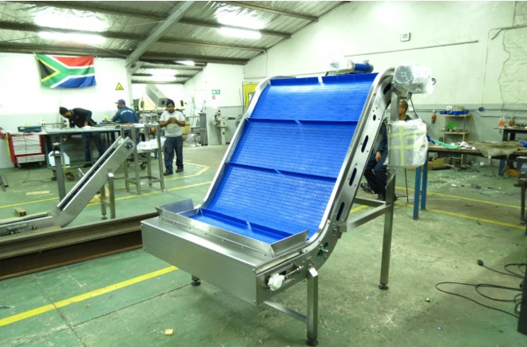
Broad Gooseneck Flighted Modular Belt Elevator
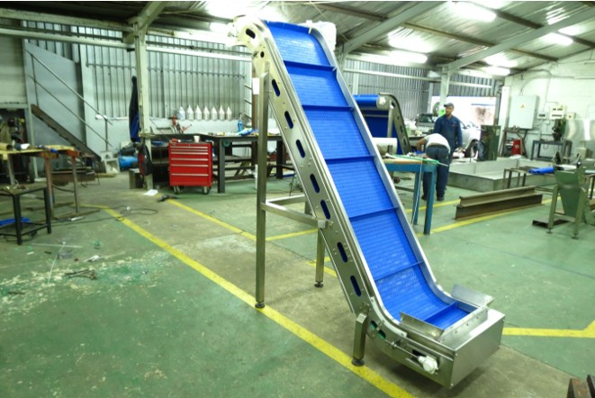
Gooseneck Flighted Modular Belt Elevator
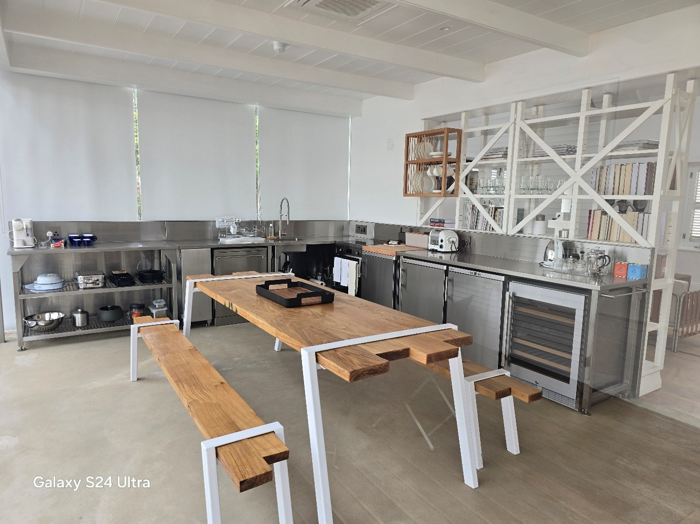
Catering Stainless Steel Kitchen
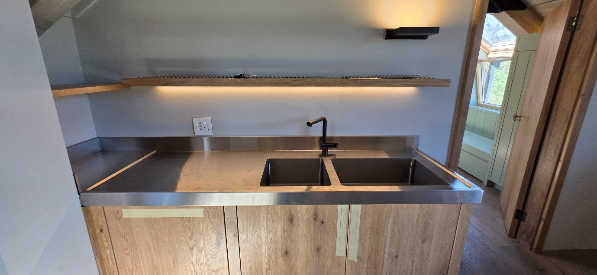
Custom Home-Grade Kitchen Counter Top
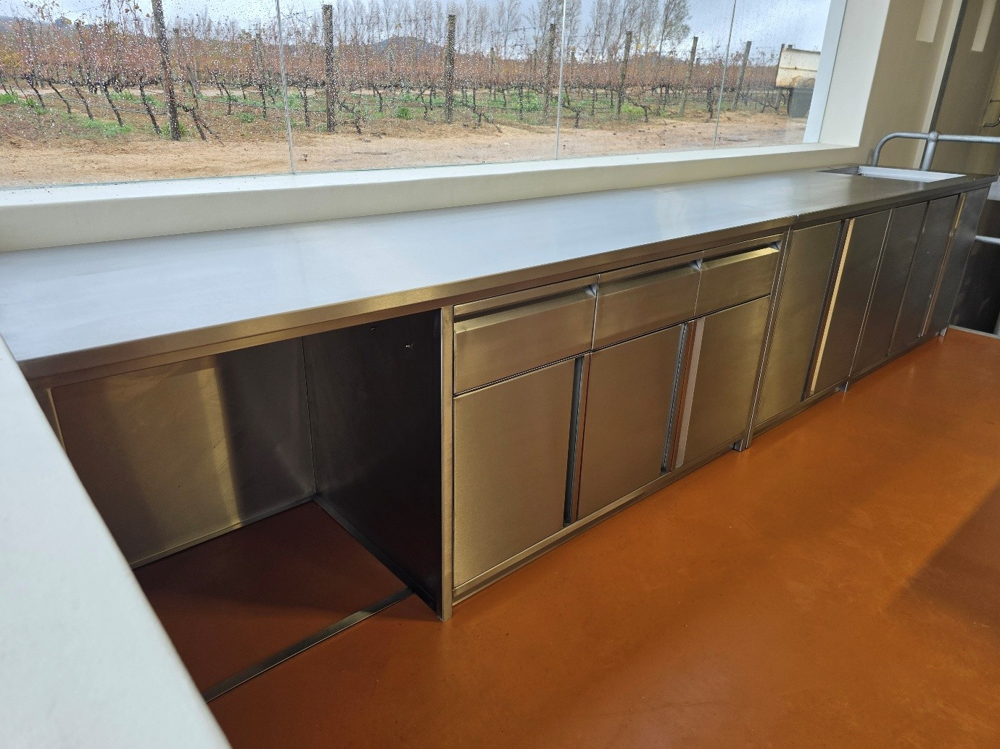
Custom Large Scullerie and Catering Kitchen

Equipment Sterilizer Sump

Industrial Cheese Cutter
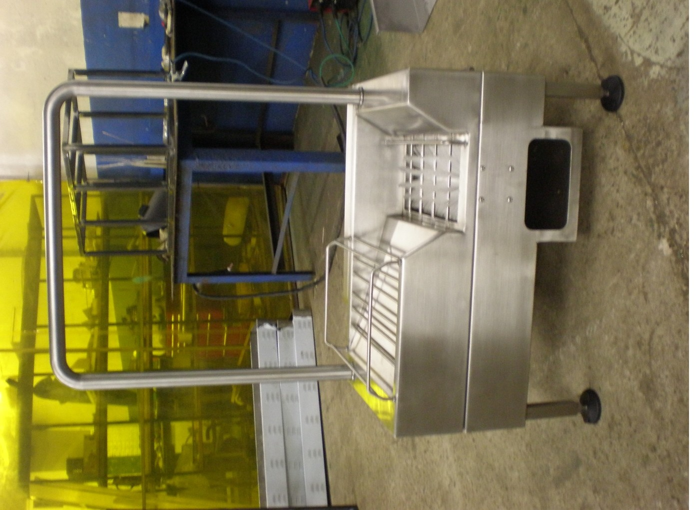
Single Brush Type Boot Washer
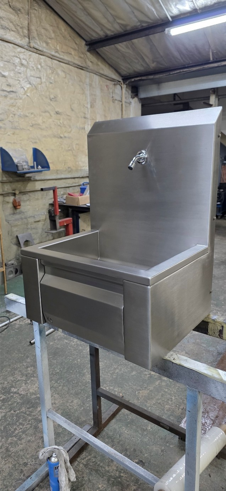
Single Knee-Operated Handwasher
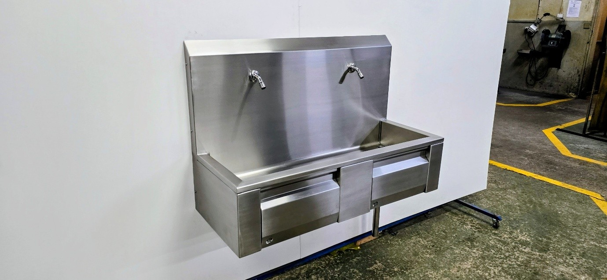
2-Man Knee-Operated Handwasher

Strainer Basket
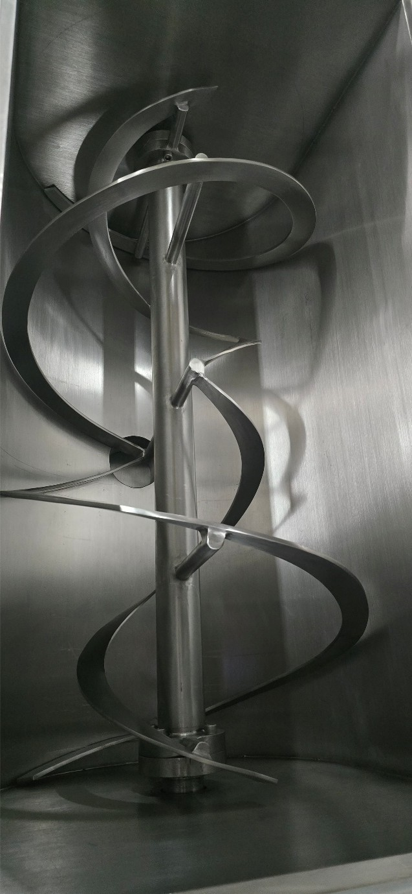
Blender Mixing Ribbon
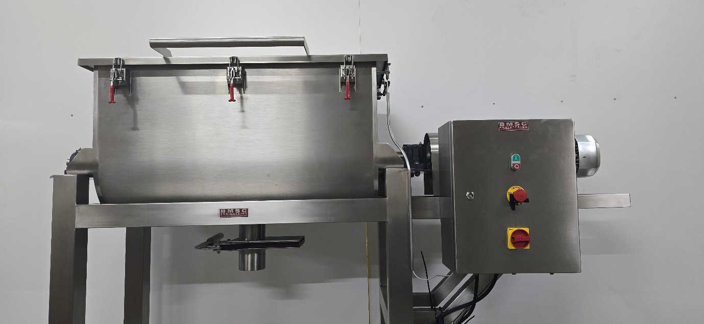
100L Premix Ribbon Blender
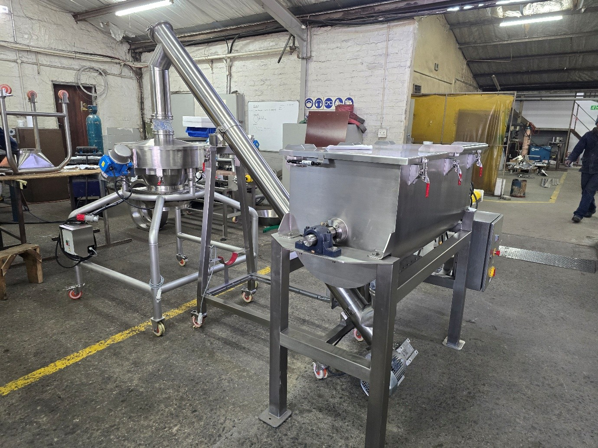
150L Flour Mix Ribbon Blender with Transfer Screw

Ribbon Blender with Transfer Screw
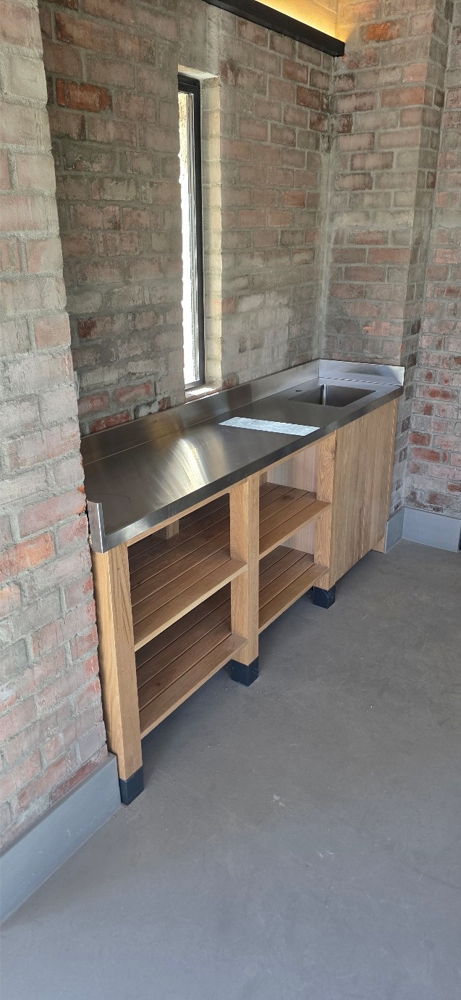
Small Custom Stainless Steel Counter Top
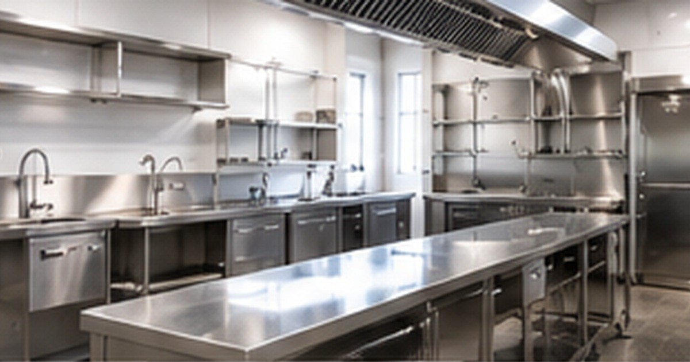
Stainless Steel Kitchen
Bucket Elevator System
Structural Steel Framework
Workshop Fabrication
Design & Engineering Review
CNC Laser Cutting
Assorted Gravity Roller Conveyors
Driven Roller Pallet Conveyor
Radius-Belt Modular Chain Belt
Broad Gooseneck Flighted Modular Belt Elevator
Gooseneck Flighted Modular Belt Elevator
Catering Stainless Steel Kitchen
Custom Home-Grade Kitchen Counter Top
Custom Large Scullerie and Catering Kitchen
Equipment Sterilizer Sump
Industrial Cheese Cutter
Single Brush Type Boot Washer
Single Knee-Operated Handwasher
2-Man Knee-Operated Handwasher
Strainer Basket
Blender Mixing Ribbon
100L Premix Ribbon Blender
150L Flour Mix Ribbon Blender with Transfer Screw
Ribbon Blender with Transfer Screw
Small Custom Stainless Steel Counter Top
Stainless Steel Kitchen
Have a project in mind? We engineer custom steel solutions to your exact requirements.
Start Your Project →